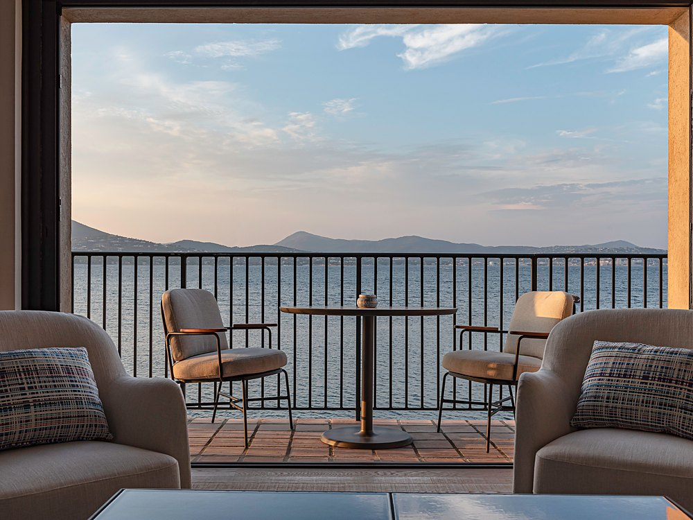
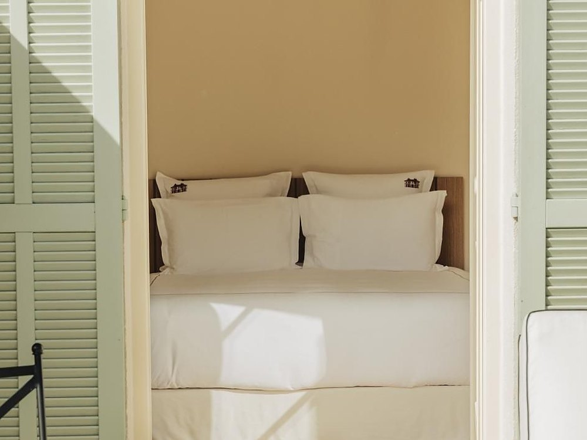
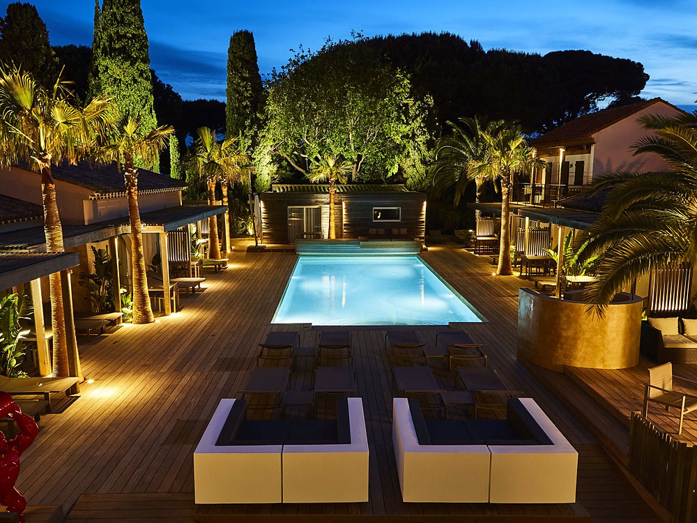
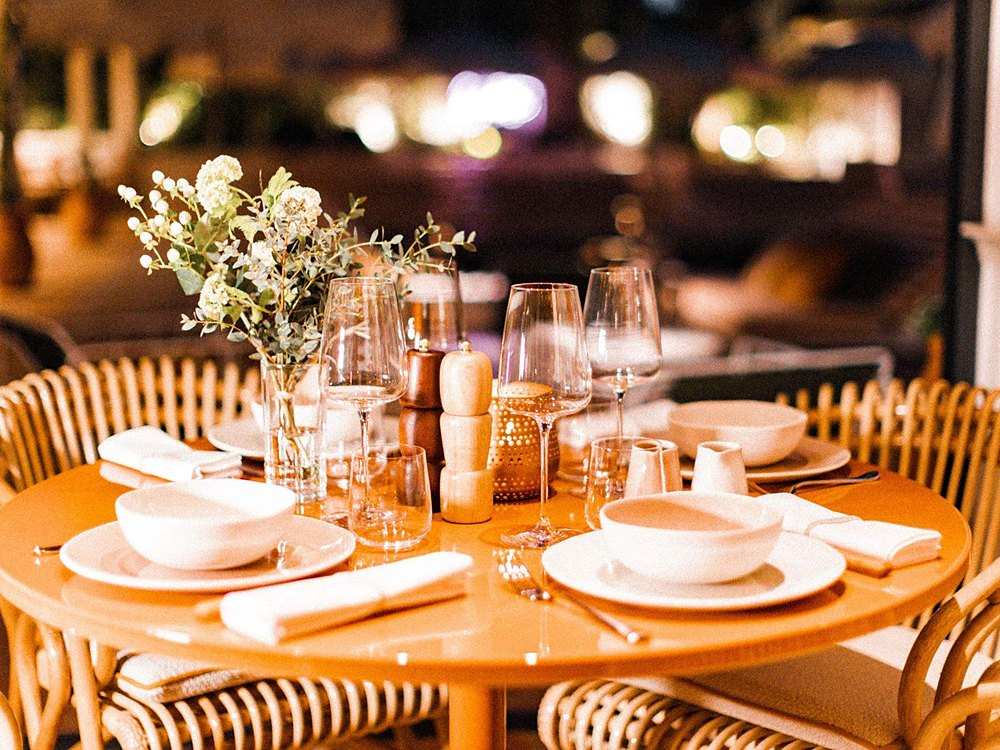

Meilleurs hôtels à Saint-Tropez : 12 adresses classées en 2026
Un bar ouvert par Boris Vian en 1949, un palais bâti en 1835 pour une princesse indienne, le plus grand spa de Saint-Tropez et la seule table étoilée du classement.

Le Cheval Blanc St-Tropez, plage de la Bouillabaisse. Photo : site officiel de l'établissement.
L'essentielDouze maisons de Saint-Tropez, décrites sans note
- Une seule table à trois étoiles dans la commune. La Vague d'Or, au Cheval Blanc St-Tropez, plage de la Bouillabaisse, cumule trois étoiles au Guide MICHELIN, cinq toques et 19/20 au Gault & Millau. Le Sezz tient la seconde table étoilée de cette sélection avec Colette, une étoile depuis 2021.
- De douze clés à quatre-vingt-six. Airelles, Pan Deï Palais compte 12 chambres et suites dans une demeure bâtie en 1835 pour la princesse Bannu Pan Deï ; le Byblos en aligne 86 et fut inauguré le 27 mai 1967. Deux idées opposées du luxe tropézien, à cinq minutes l'une de l'autre.
- Cette page ne note pas. Nous décrivons ce que chacune des douze maisons publie et ce qu'elle propose, sans chiffre. Pour un classement noté, voir notre palmarès des hôtels de luxe de Saint-Tropez, qui range douze adresses selon le Score LMHS.
Palmarès documentaire. Nous n'avons pas dormi dans ces douze maisons. Les éléments de cette page ont été relevés le 4 septembre 2026 sur les sites officiels des établissements, page par page. Les tarifs se demandent directement aux maisons, qui établissent leur prix selon la saison, la durée et la vue ; nous préférons vous y renvoyer plutôt que de recopier les chiffres des plateformes.
Notre sélection : les 12 meilleurs hôtels de Saint-Tropez
Cheval Blanc St-Tropez, et la seule table à trois étoiles
Plage de la Bouillabaisse, 83990 Saint-Tropez · 5 étoiles · maison LVMH
C'est la table qui fait la différence, et elle est sans équivalent dans la commune : La Vague d'Or est récompensée par trois étoiles au Guide MICHELIN, cinq toques et 19/20 au Gault & Millau. La maison elle-même est posée plage de la Bouillabaisse, face à la Méditerranée, à l'entrée du village, avec des suites qui portent des noms plutôt que des numéros, la Heure Bleue, la Duplex Pinède, la Duplex Sea Suite. À savoir avant de réserver : c'est l'adresse la plus recherchée de Saint-Tropez, et elle se réserve très en amont.
Plage de la Bouillabaisse · La Vague d'Or, 3 étoiles MICHELIN · 19/20 au Gault & Millau · Site officiel →

Byblos, l'institution ouverte un soir de mai 1967
Avenue Paul Signac, 83990 Saint-Tropez · 5 étoiles
L'institution tropézienne, et une histoire qui mérite d'être racontée juste. Son fondateur est Jean-Prosper Gay-Para, hôtelier libanais, et la maison a été inaugurée le 27 mai 1967, en présence de Brigitte Bardot et de Mireille Darc. Elle annonce 86 chambres et suites. Le spa est Byblos Spa by Sisley, la boîte de nuit s'appelle Les Caves du Roy et la plage, Byblos Beach, se trouve sur le cordon de Pampelonne. À savoir avant de réserver : c'est une maison de fête, et cela s'entend.
86 chambres et suites · Inauguré le 27 mai 1967 · Byblos Spa by Sisley · Les Caves du Roy · Site officiel →

La Ponche, et le bar que Boris Vian a ouvert en 1949
Quartier de la Ponche, 83990 Saint-Tropez · 5 étoiles
La seule de cette sélection qui ne se visite pas, qui se traverse. La maison est née en 1938 d'un bar de pêcheurs, et son bar actuel date de 1949, quand Boris Vian a annexé une grange mitoyenne pour y créer le Saint-Germain-des-Prés-La Ponche. Aujourd'hui 21 chambres et quatre appartements qui portent des noms plutôt que des numéros : Danièle Thompson, Jack Nicholson, Pablo Picasso et La Glaye. Le restaurant est pensé par le chef Simon Pinault. L'espace bien-être propose les soins exclusifs PERS, du yoga et du Pilates face à la mer. À savoir avant de réserver : c'est le cœur du village ancien, donc les ruelles, donc le stationnement.
21 chambres et 4 appartements nommés · Bar ouvert en 1949 par Boris Vian · Chef Simon Pinault · Soins exclusifs PERS · Site officiel →

Airelles Saint-Tropez, le palais d'une princesse indienne
52 rue Gambetta, 83990 Saint-Tropez · 5 étoiles · enseigne Airelles
La plus petite de cette sélection, et celle qui a la plus belle histoire. La demeure a été bâtie en 1835 par le général Jean-François Allard pour son épouse, la princesse Bannu Pan Deï, rencontrée au Pendjab. D'où le nom, et d'où le décor. La maison est passée sous enseigne Airelles et compte 12 chambres et suites. Piscine en mosaïque, et une table, Les Délices du Pan Deï, confiée au chef Paul Benimelli. À savoir avant de réserver : douze clés à deux pas de la place des Lices, il faut aimer être au centre.
12 chambres et suites · Demeure bâtie en 1835 · Piscine en mosaïque · Table Les Délices du Pan Deï · Site officiel →

Lou Pinet, l'une des plus grandes piscines de la commune
Chemin du Pinet, 83990 Saint-Tropez · 5 étoiles · collection Pariente
L'adresse la plus sous-estimée de Saint-Tropez. On lit souvent seize chambres ; la maison en annonce 34 clés. Ce n'est donc pas un hôtel confidentiel, c'est un hôtel discret, ce qui vaut mieux. Son argument principal est dehors : la maison écrit que sa piscine est l'une des plus grandes de Saint-Tropez et qu'elle réunit tout l'hôtel autour d'elle. Le Spa by Tata Harper et le restaurant Beefbar complètent l'ensemble, dans un jardin planté de pins parasols. À savoir avant de réserver : le chemin du Pinet n'est pas le port, il faut compter le trajet.
34 clés · L'une des plus grandes piscines de Saint-Tropez · Spa by Tata Harper · Restaurant Beefbar · Site officiel →

La Bastide de Saint-Tropez, quatre mas dans un parc
Route des Carles, 83990 Saint-Tropez · 5 étoiles
Une adresse de parc plutôt que de rue. Quatre mas provençaux se dressent autour d'un jardin planté d'essences exotiques, avec une piscine chauffée. La maison exploite deux tables très différentes : La Trattoria, côté piscine, où le chef Luca Binaschi revisite la cuisine du nord de l'Italie, et Le Jardin de la Bastide, la table gastronomique, dont la carte porte le nom d'« Essenza e Impronta ». À savoir avant de réserver : on est à quelques minutes du centre, pas dedans.
Quatre mas provençaux · Parc et piscine chauffée · La Trattoria, chef Luca Binaschi · Table Le Jardin · Site officiel →

Kube, le plus grand spa de la sélection
319 route du littoral, 83580 Gassin · 5 étoiles · groupe Machefert
La plus vaste maison de cette sélection, et la mieux équipée. 70 chambres réparties dans neuf bâtiments et trois univers, trois piscines, un rooftop, Le Petit Célestin, et une plage affiliée, la plage Cybèle, sur le cordon de Pampelonne. Le spa est le seul de la sélection dont l'établissement publie les dimensions : 300 m² sur deux niveaux, six cabines dont une double, hammam et sauna, sous enseigne myBlend. À savoir avant de réserver : c'est une grande maison, animée, faite pour ceux qui veulent tout sur place.
70 chambres en neuf bâtiments · Spa myBlend de 300 m², six cabines · Trois piscines et un rooftop · Plage Cybèle · Site officiel →

Hôtel Sezz, et sa table étoilée route des Salins
151 route des Salins, 83990 Saint-Tropez · 5 étoiles
Nous lui consacrons un avis détaillé. 37 clés, un spa Susanne Kaufmann dimensionné pour la maison plutôt que pour rivaliser avec les palaces, une piscine extérieure chauffée de 200 m² et une table, Colette, étoilée au Guide MICHELIN depuis 2021. À savoir avant de réserver : deux kilomètres du centre, donc la navette.
37 clés · Restaurant Colette, étoilé au Guide MICHELIN · Spa Susanne Kaufmann · Piscine chauffée de 200 m² · Site officiel →

Villa Marie, quarante-cinq clés dans trois hectares de pins
1100 chemin de Val Rian, 83350 Ramatuelle · 5 étoiles
La plus belle situation de la sélection, sur les hauteurs de Pampelonne, à quatre kilomètres des plages et à quelques minutes du village. La maison annonce 45 chambres et suites, toutes avec terrasse ou balcon, dans une pinède de trois hectares. Le spa est signé Pure Altitude, la marque de la famille Sibuet, et le restaurant s'appelle Dolce Vita. Un séjour bien-être de trois nuits comprend un soin Pure Altitude de cinquante minutes par personne et par jour. À savoir avant de réserver : on y monte par une route de colline, et la maison ferme en basse saison.
45 chambres et suites · Pinède de 3 hectares · Spa Pure Altitude · Restaurant Dolce Vita · Site officiel →

Villa Cosy, la maison discrète du chemin de la Belle Isnarde
Chemin de la Belle Isnarde, 83990 Saint-Tropez · 5 étoiles
La plus confidentielle de la sélection, et sans doute la moins citée. La maison décline ses hébergements par noms plutôt que par catégories : chambres Privilèges et Luxe, suites Junior, Pool Suite, Suite Jardin, Master Suite et Suite Riviera. Le bien-être est signé Spa by Sothys, avec un espace zen et un fitness autour de la piscine. S'y ajoutent le Cosy Bar et une cave à vins. À savoir avant de réserver : c'est une petite maison, elle se remplit vite en saison.
Spa by Sothys · Piscine, espace zen et fitness · Cosy Bar et cave à vins · Pool Suite et Suite Riviera · Site officiel →

Hôtel de Paris, le rooftop et la traverse de la Gendarmerie
1 traverse de la Gendarmerie, 83990 Saint-Tropez · 5 étoiles
La plus urbaine de la sélection, à deux pas du port, décorée par l'architecte Sybille de Margerie dans un registre qui revendique les années soixante. Deux précisions, parce que l'on lit souvent autre chose : le spa est signé Clarins, et la table s'appelle Le Pationata. S'y ajoutent le bar l'Atrium dans le lobby et ce que la maison présente comme l'unique rooftop du village. Elle tient aussi une plage, La Serena. À savoir avant de réserver : peu d'extérieur comparé aux maisons de la pinède.
Spa by Clarins · Restaurant Le Pationata · Rooftop et bar l'Atrium · Plage La Serena · Site officiel →

Hôtel des Lices, quarante chambres et un parking
Avenue Augustin Grangeon, 83990 Saint-Tropez · 4 étoiles
L'adresse la plus pratique de la sélection, et ce n'est pas un reproche. La maison annonce 40 chambres, une piscine aux lignes modernes, un restaurant-bar et surtout un parking privatif, ce qui à Saint-Tropez en juillet vaut bien des équipements. Elle revendique des racines provençales assumées et une position à quelques minutes à pied de la place des Lices. À savoir avant de réserver : c'est un 4 étoiles, pas un palace, et la maison ne prétend pas l'inverse.
40 chambres · Piscine · Restaurant-bar · Parking privatif · Site officiel →
Tableau comparatif : hôtels du golfe de Saint-Tropez 2026
| Rang | Établissement | Situation | Étoiles | Signe distinctif |
|---|---|---|---|---|
| 1 | Cheval Blanc St-Tropez | Plage de la Bouillabaisse | 5 | La Vague d'Or, 3 étoiles MICHELIN |
| 2 | Byblos | Avenue Paul Signac | 5 | 86 clés, Les Caves du Roy, spa Sisley |
| 3 | La Ponche | Quartier de la Ponche | 5 | Bar ouvert en 1949 par Boris Vian |
| 4 | Airelles, Pan Deï Palais | Rue Gambetta | 5 | 12 clés, demeure de 1835 |
| 5 | Lou Pinet | Chemin du Pinet | 5 | 34 clés, l'une des plus grandes piscines |
| 6 | La Bastide de Saint-Tropez | Route des Carles | 5 | Quatre mas dans un parc, piscine chauffée |
| 7 | Kube | Route du littoral, Gassin | 5 | Spa myBlend de 300 m², six cabines |
| 8 | Hôtel Sezz | Route des Salins | 5 | 37 clés, Colette étoilé au Guide MICHELIN |
| 9 | Villa Marie | Chemin de Val Rian, Ramatuelle | 5 | 45 clés, pinède de trois hectares |
| 10 | Villa Cosy | Chemin de la Belle Isnarde | 5 | Spa by Sothys, espace zen |
| 11 | Hôtel de Paris | Traverse de la Gendarmerie | 5 | Spa Clarins, rooftop, plage La Serena |
| 12 | Hôtel des Lices | Avenue Augustin Grangeon | 4 | 40 chambres, piscine, parking privatif |
Relevé le 4 septembre 2026 sur les sites officiels des huit maisons. « n. c. » signifie que l'établissement ne publie pas l'information.
Comment nous avons établi cette sélection
Cette page ne publie aucune note. C'est un choix : les douze maisons retenues ne jouent pas dans la même catégorie, et les comparer par un chiffre unique donnerait une fausse précision. Un palace de bord de mer et un 4 étoiles avec parking ne se mesurent pas à la même aune, mais les deux ont leur place dans un séjour tropézien.
La sélection retient douze adresses du golfe, du palace à la maison de quarante chambres. Chaque fiche décrit ce que l'établissement publie sur son propre site, page par page : nombre de clés, tables, spa, situation. Là où la maison ne publie rien, nous ne complétons pas.
Pour un classement noté et hiérarchisé, nous tenons par ailleurs un palmarès des hôtels de luxe de Saint-Tropez, qui range douze adresses selon le Score LMHS.
Saint-Tropez : bien choisir avant de réserver
Commencez par choisir votre ambiance, c'est ce qui structure le séjour. Saint-Tropez propose deux façons de vivre la même destination. Les maisons du village, de douze à quarante clés, se vivent à pied : on descend dîner au port, on rentre par les ruelles, tout se fait sans voiture. Les maisons de la pinède, plus grandes, offrent l'espace, les pins parasols, les vues sur le golfe et de grandes piscines. Les deux formules sont excellentes, elles ne racontent simplement pas le même séjour, et notre classement mêle volontairement les deux.
Chaque maison a sa plage, et souvent la plus belle du secteur. Le Byblos a Byblos Beach et l'Hôtel de Paris La Serena, l'une et l'autre à Ramatuelle, sur le cordon de Pampelonne ; l'Hôtel de Paris tient La Serena. Ce sont de vraies adresses de plage, avec service et transats, desservies depuis l'hôtel. Prévoyez le trajet dans votre journée et demandez la navette au moment de réserver : c'est la question la plus utile à poser.
Les tarifs se demandent directement, et c'est plutôt une bonne nouvelle. Les huit maisons établissent leur prix selon la saison, la durée et la vue plutôt que par une grille figée, et aucune ne publie de barème sur son site. Nous n'en publions donc pas non plus. Un message ou un appel à la réception donne un prix ferme, souvent assorti d'une proposition plus juste que ce qu'affichent les plateformes.
Pour élargir, nous tenons aussi une sélection des hôtels de charme de la Côte d'Azur, un palmarès des meilleurs hôtels de luxe à Cannes, un classement des meilleurs spas azuréens et un palmarès des hôtels de luxe tropéziens à la sélection différente.
Questions fréquentes sur les hôtels de Saint-Tropez
Quel est le meilleur hôtel de Saint-Tropez en 2026 ?
Cela dépend de ce que vous cherchez, et cette page ne tranche pas par une note. Pour la gastronomie, le Cheval Blanc St-Tropez abrite La Vague d'Or, seule table de la commune à porter trois étoiles au Guide MICHELIN. Pour l'histoire, le Byblos, inauguré le 27 mai 1967, et Airelles, Pan Deï Palais, demeure de 1835 bâtie pour la princesse Bannu Pan Deï. Pour le calme, La Bastide de Saint-Tropez et ses quatre mas dans un parc, ou la Villa Cosy. Pour un séjour plus accessible, l'Hôtel des Lices et son parking privatif.
Quels hôtels de Saint-Tropez ont une table étoilée ?
Deux de cette sélection. La Vague d'Or, au Cheval Blanc St-Tropez, est récompensée par trois étoiles au Guide MICHELIN, cinq toques et 19/20 au Gault & Millau : c'est la seule table à trois étoiles de la commune. Colette, à l'Hôtel Sezz, est étoilée au Guide MICHELIN depuis 2021. La Bastide de Saint-Tropez exploite par ailleurs deux tables, La Trattoria du chef Luca Binaschi et Le Jardin de la Bastide.
Quel est le plus petit hôtel de luxe de Saint-Tropez ?
Airelles Saint-Tropez, Pan Deï Palais, avec 12 chambres et suites. La demeure a été bâtie en 1835 par le général Jean-François Allard pour son épouse, la princesse Bannu Pan Deï, rencontrée au Pendjab. Elle se trouve 52 rue Gambetta, à deux pas de la place des Lices, avec une piscine en mosaïque et une table, Les Délices du Pan Deï, confiée au chef Paul Benimelli.
Qui a fondé le Byblos de Saint-Tropez ?
Jean-Prosper Gay-Para, hôtelier libanais, et non Jean Castel comme on le lit souvent. La maison a été inaugurée le 27 mai 1967, en présence de Brigitte Bardot et de Mireille Darc, et tient son nom du port libanais de Byblos. Les Caves du Roy ont ouvert en juillet de la même année. Le Byblos annonce aujourd'hui 86 chambres et suites, et son spa est signé Sisley.
Quel hôtel de Saint-Tropez choisir avec un budget plus mesuré ?
L'Hôtel des Lices, avenue Augustin Grangeon, est le seul 4 étoiles de cette sélection. Il annonce 40 chambres, une piscine aux lignes modernes, un restaurant-bar et surtout un parking privatif, ce qui à Saint-Tropez en juillet vaut bien des équipements. Il se trouve à quelques minutes à pied de la place des Lices. La Villa Cosy, chemin de la Belle Isnarde, est l'autre adresse discrète de la sélection.
Quels spas trouve-t-on dans les hôtels de Saint-Tropez ?
Les enseignes de cette sélection sont Sisley au Byblos, Susanne Kaufmann à l'Hôtel Sezz, Sothys à la Villa Cosy et Clarins à l'Hôtel de Paris. La Villa Cosy ajoute un espace zen et un fitness autour de sa piscine, et l'Hôtel Sezz une piscine extérieure chauffée de 200 m². La Bastide de Saint-Tropez dispose d'une piscine chauffée dans son parc.
Le mot de LucasSaint-Tropez, plus varié qu'on ne le croit
Ce qui frappe en établissant ce classement, c'est la variété. On imagine Saint-Tropez comme un seul décor, et la destination en propose plusieurs, également réussis. Un bar de 1949 dans le village, un palais indien de 1835 derrière la place des Lices, une pinède avec la plus grande piscine de la commune, un spa de 300 mètres carrés, une table étoilée. Aucune de ces huit maisons ne cherche à ressembler aux sept autres, et c'est ce qui rend le choix intéressant.
Méthode et sources
Les huit fiches ont été établies le 4 septembre 2026 à partir des sites officiels des établissements, page par page. Les chiffres de clés, les noms de chefs, les enseignes de spa et les adresses proviennent tous de ces sites. Là où la maison ne publie rien, le tableau porte « n. c. » : nous ne complétons pas avec une estimation.
La note du Hôtel Sezz est reprise telle quelle de notre avis dédié, conformément à notre règle : une adresse ne porte qu'une seule note sur ce site, quelle que soit la page où elle apparaît.
La date d'inauguration du Byblos et le nom de son fondateur ont été recoupés en dehors du site de la maison, qui ne les publie pas au moment du relevé.
Aucun séjour de contrôle n'a été effectué pour ce palmarès, et aucune des huit maisons n'a été contactée avant publication. Si une information vous semble inexacte, écrivez-nous : nous corrigeons le jour même et nous datons la correction.